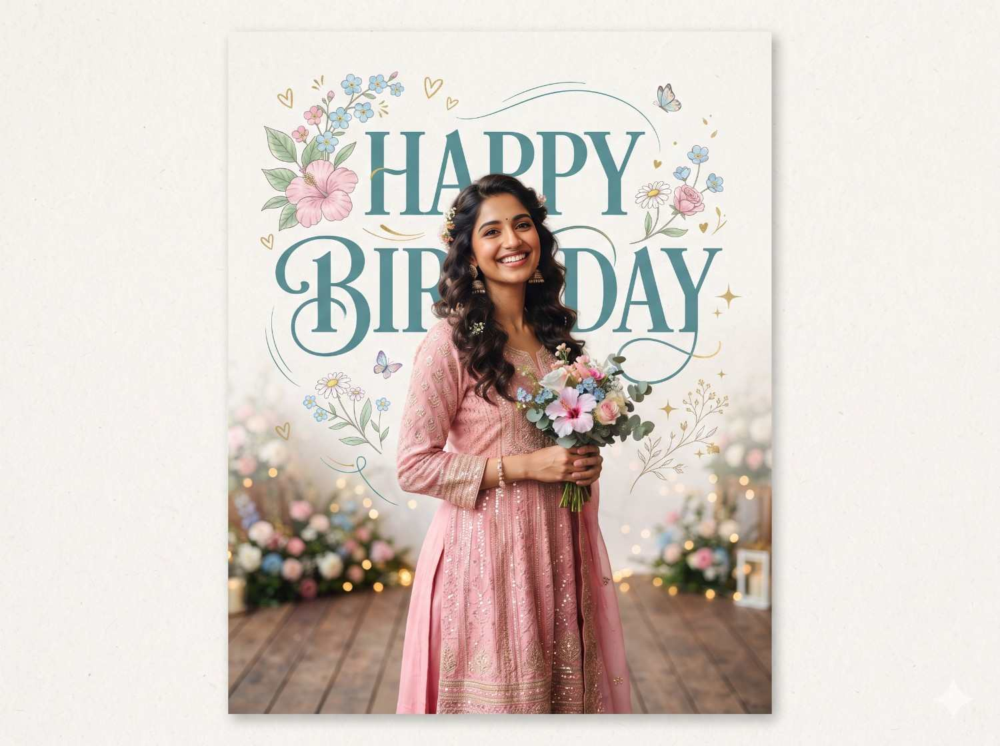

Birthday poster AI prompt
Floral birthday poster
Create a celebratory portrait poster with expressive typography, delicate floral details, and a soft paper texture.

Copy this prompt
Create a premium birthday poster featuring a young Indian woman in a pink ethnic outfit, standing in front of oversized teal 'HAPPY BIRTHDAY' typography on a soft textured white paper background. Add pastel floral illustrations, a pink hibiscus flower, blue forget-me-nots, delicate butterfly, heart doodles, and elegant curved line art. Use soft natural lighting, minimal aesthetic design, clean composition, high detail, Instagram-ready, 4:5 ratio.
How to use it
- Attach a portrait if you want the poster to feature a specific person.
- Replace the outfit, name, and birthday text to personalize the design.
- Check all generated lettering carefully and correct it in a design editor if needed.